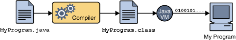
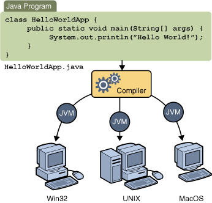
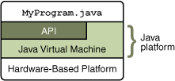

|
The Java programming language is a high-level language that can be characterized by all of the following buzzwords:
Each of the preceding buzzwords is explained in The Java Language Environment , a white paper written by James Gosling and Henry McGilton.
In the Java programming language, all source code is first
written in plain text
files ending
with the .java extension. Those source files are then compiled
into .class files by the javac
compiler.
A .class file does not contain code that
is native to your processor;
it instead contains bytecodes — the machine language of the Java Virtual Machine1 (Java VM).
The java launcher tool then runs your application with an instance of the Java Virtual Machine.

An overview of the software development process.
Because the Java VM is
available on many different operating systems,
the same .class files are capable of running on Microsoft Windows, the Solaris™ Operating System (Solaris OS), Linux,
or Mac OS. Some virtual machines, such as the
Java HotSpot virtual machine, perform additional steps at runtime
to give your application a performance boost. This include various
tasks such as
finding performance bottlenecks and recompiling (to native code)
frequently used sections of code.

Through the Java VM, the same application is capable of running on multiple platforms.
The Java platform has two components:
The API is a large collection of ready-made software components that provide many useful capabilities. It is grouped into libraries of related classes and interfaces; these libraries are known as packages. The next section, What Can Java Technology Do? highlights some of the functionality provided by the API.

The API and Java Virtual Machine insulate the program from the underlying hardware.
The terms"Java Virtual Machine" and "JVM" mean a Virtual Machine for the Java platform.
|